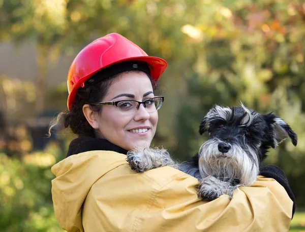
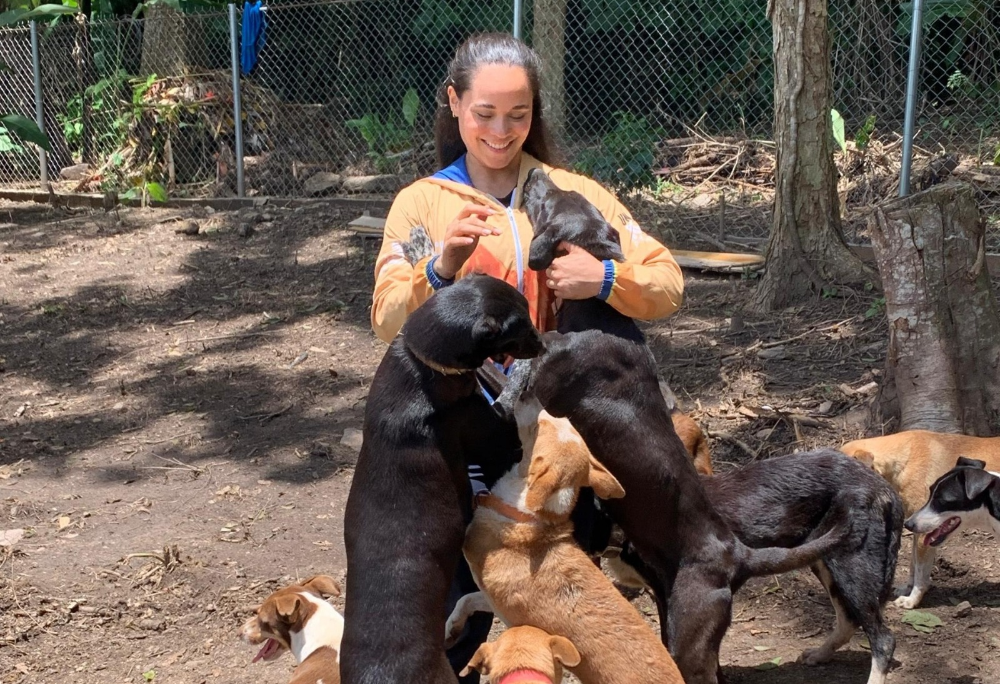
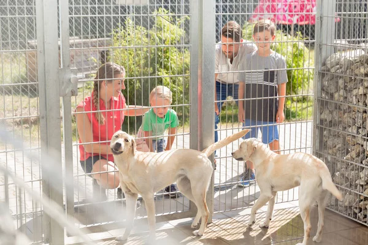

Animales Rescatados: 324

Animales Adoptados: 289

Voluntarios Activos: 42

esta cifras muestran el progreso de cada una de las accciones que realisamos este año aunque algunas cresen lento son parte importante de la ayudaa los animales